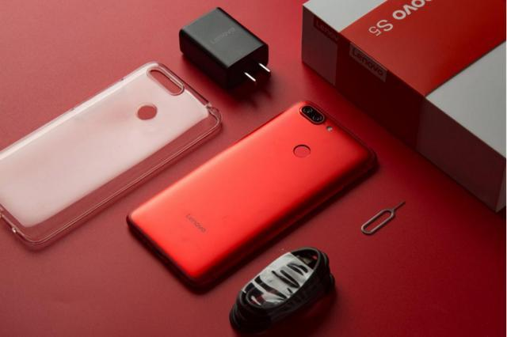
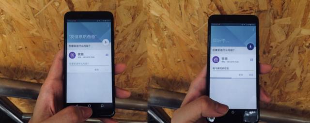
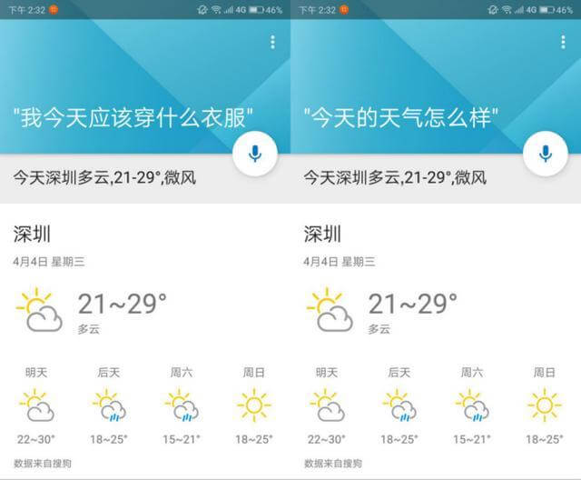
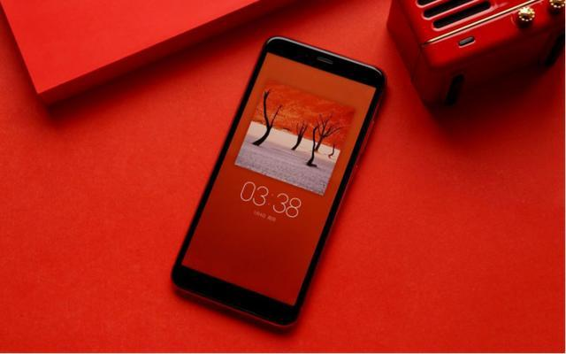

清明节买个联想S5自驾游：用语音控制手机更安全
来源：联想/手机 时间：2018-04-07 17:48
之前江湖人称龙哥的罗永浩曾评价：关于语音识别，如今的手机厂商要解决的不是技术问题，而是心理学问题。其直指语音识别的“痛处”，就是和手机对话过于尴尬、傻，导致体验太差。但其实也并不完全对，比如在开车的时候，语音识别就可以发挥大作用，是一个极佳的语音识别使用场景。
清明节要来了，小编打算和同事自驾游潇洒一回，就以手中的联想S5内置的乐语音为例，和大家分享下使用经历。乐语音是可以实现用户直接与手机交流，当你告诉他一个命令，他就会按照你的指示自动去执行，不需要任何的人工手动操作。同时乐语音有一个最大的亮点，就是打破了应用壁垒，首次在手机上实现了跨应用操作。
具体怎么实现呢？我们一起来看看。当你在开车的时候，有事情想找家人，但基于安全考虑，不能够玩手机，那你就对手机说：我要点电话给XXX。这时手机接收到你的命令，即可立刻执行。若你是要取消通话的话，只要说声取消就可以结束通话。
乐语音的发信息功能更是强大，在开车过程中只需要和手机说声：给XXX发信息。手机就会弹出信息编辑框，这时依旧不用你输入信息内容，只要你把你想要发的文字告诉给联想5S，它既可为你编辑好信息内容，只要等待下面的紫色进度条加载完毕，即表示信息发送成功。
乐语音除了在开车的时候可以使用，在生活上也给了我们很多的便捷。早上起床，想知道今天需要穿什么衣服。这时我们只需要和联想S5说句：我今天应该穿什么衣服。他就会在下方把当天的温度、空气质量以及未来几天的天气情况都会一一罗列出来，并且会语音提示出来。这样一来我们便可以知道当天的天气怎么样，就可以清楚地知道应该穿多厚的衣服了。
联想S5拥有此黑科技，不仅在生活中给我们带来便捷，还在开车的过程中给我们带来安全性。可以看出联想手机越来越人性化了，都是从用户的生活出发，一切以用户的体验为主。语音识别作为“AI”大潮中的一个重要突破口，已经成为了各大厂商争相追逐的焦点。但说实话，除了一些特殊场景下，语音识别依旧起的只是辅助性作用，想象一下身处地铁，对这手机讲“我要……”的确是非常尴尬。但从技术层面来看，至少联想S5带来的进步已经十分巨大，其识别准确度、应用的内部融合等等，体验远超iPhone，甚至可以说碾压。